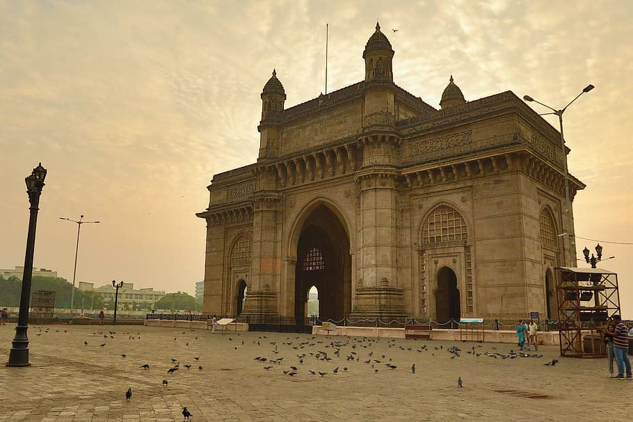

Gateway of India

Introduction
The Gateway of India is one of Mumbai’s most iconic landmarks. Built during the 20th century, it symbolizes the rich history and colonial heritage of the city.
History
The foundation stone was laid in 1911 to commemorate the visit of King George V and Queen Mary to India. The structure was completed in 1924 and became a ceremonial entrance to British India. It later became a significant site for major historical events, including the departure of British troops in 1948.
The design was developed by architect George Wittet, and the construction took nearly 13 years to complete. It was originally planned as a grand welcome for British royals, but it ultimately became a symbol of India’s colonial past and independence.
Architecture
The monument is designed in Indo-Saracenic style, blending elements of Hindu, Muslim, and Gothic architecture. It stands at a height of 26 meters and is built using yellow basalt and reinforced concrete. The intricate latticework and grand archway make it a remarkable example of colonial architecture in India.
The structure features a large central dome, flanked by two smaller domes, and intricate stone latticework on its surface. It is reinforced with concrete, ensuring its durability against the elements.
Significance
The Gateway of India served as a major symbol of power during British rule and remains a historical icon today. It is a major tourist attraction and a site of cultural events, protests, and celebrations.
It is also a popular location for film shoots, art exhibitions, and local street performances. The site draws millions of visitors annually.
| Created by Gulam Imran
Visitor Information
Location: Apollo Bunder, Mumbai, India
Timings: Open 24 hours
Entry Fee: Free
Best Time to Visit: November to March
Things to Do
- Take a ferry ride to Elephanta Caves from the Gateway.
- Enjoy street food and shopping at nearby Colaba Causeway.
- Witness the beautiful view of the Arabian Sea and the Taj Mahal Palace.
- Visit the nearby museums, art galleries, and historical buildings.
- Attend cultural performances or events often held in the vicinity.
Nearby Attractions
- Taj Mahal Palace Hotel: A historic luxury hotel adjacent to the Gateway.
- Chhatrapati Shivaji Maharaj Terminus: A UNESCO World Heritage railway station.
- Marine Drive: A scenic coastal road perfect for evening walks.
- Jehangir Art Gallery: A hub for modern and contemporary Indian art.
- Chhatrapati Shivaji Maharaj Vastu Sangrahalaya: A museum showcasing Indian history and culture.
- Elephanta Caves: A UNESCO-listed site known for its rock-cut temples and sculptures.
Interesting Facts
- The last British troops to leave India after independence did so through the Gateway of India in 1948.
- It was originally built to welcome King George V and Queen Mary but was completed much later in 1924.
- The structure has withstood major events, including the 2008 Mumbai terrorist attacks.
- It is one of the most photographed places in Mumbai.
- Over the years, it has been a backdrop for protests, cultural celebrations, and political gatherings.
Location
More Information
For more details, visit these websites: